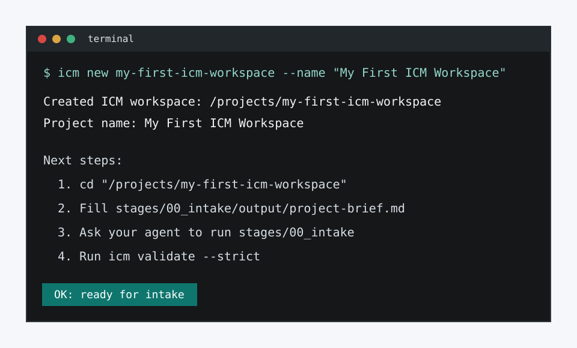
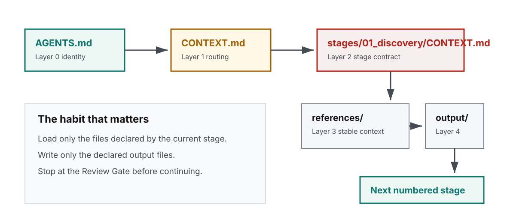
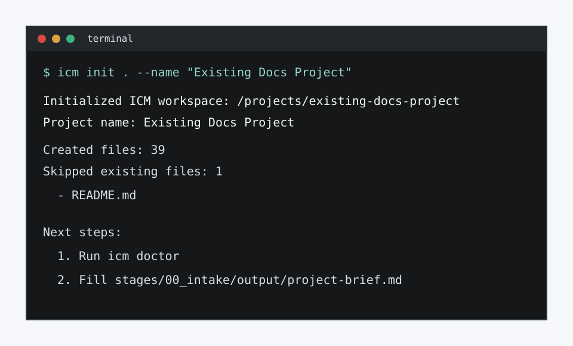
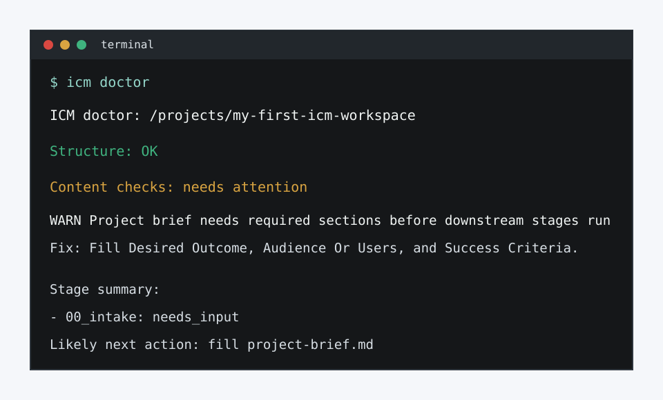
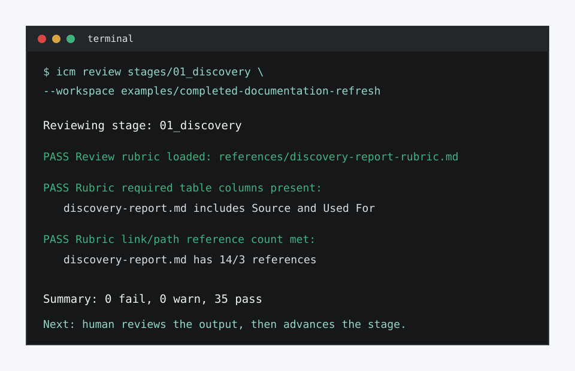

Filesystem-based agent workflows
Interpretable Context Methodology, ready to run from the CLI.
Create or retrofit a plain-file workspace where every stage has a contract, every output is reviewable, and humans can inspect what the agent is doing before the next step runs.
python -m pip install icm-workspace-template
icm new my-first-icm-workspace --name "My First ICM Workspace"
icm doctor my-first-icm-workspace
How the method stays inspectable
Stages are folders. Contracts are markdown. Outputs are handoffs.

Adopt ICM inside a real project
Add ICM without overwriting your existing files.
icm init copies only missing starter files into the target folder. Existing README, source files, config, and docs stay untouched.
cd my-existing-project
icm init . --name "My Existing Project" --with-common-artifacts
icm doctor

Beginner-friendly diagnostics
Doctor explains the next repair, not just the failure.
The doctor command checks structure, empty stage sections, undeclared outputs, missing config inputs, broken handoffs after outputs are present, and rubric failures on declared outputs. Review rubrics can also require source citations, table shapes, path counts, and common artifact shapes for important outputs.
- Structure validation with suggested fixes.
- Content checks for stage contracts and intake readiness.
- Traceability checks for outputs that must cite their sources.
- Starter files for source inventories, release calendars, and decision logs.
- Stage summary that points to the next action.
Demo polish
See a completed review before changing your own workflow.
The documentation-refresh and project-planning examples show plain markdown rubrics checking traceability sources, table columns, cited paths, source inventories, calendars, and decision logs.
git clone https://github.com/stickwithfiddle-sys/interpretable-context-methodology-template.git
cd interpretable-context-methodology-template
python -m pip install -e ".[dev]"
icm review stages/01_discovery --workspace examples/completed-documentation-refresh
Read next
Docs, example workspace, and release notes.
Product path
CLI first, dashboard after the language stabilizes.
- Now: PyPI install, CLI onboarding, doctor checks, source traceability, table/path validators, artifact-shape validators, common artifact starters, workflow-specific rubric guidance, examples, and docs.
- Next: a short recorded walkthrough and a dashboard-readiness pass over review queues.
- Later: a dashboard over the same filesystem workspace.